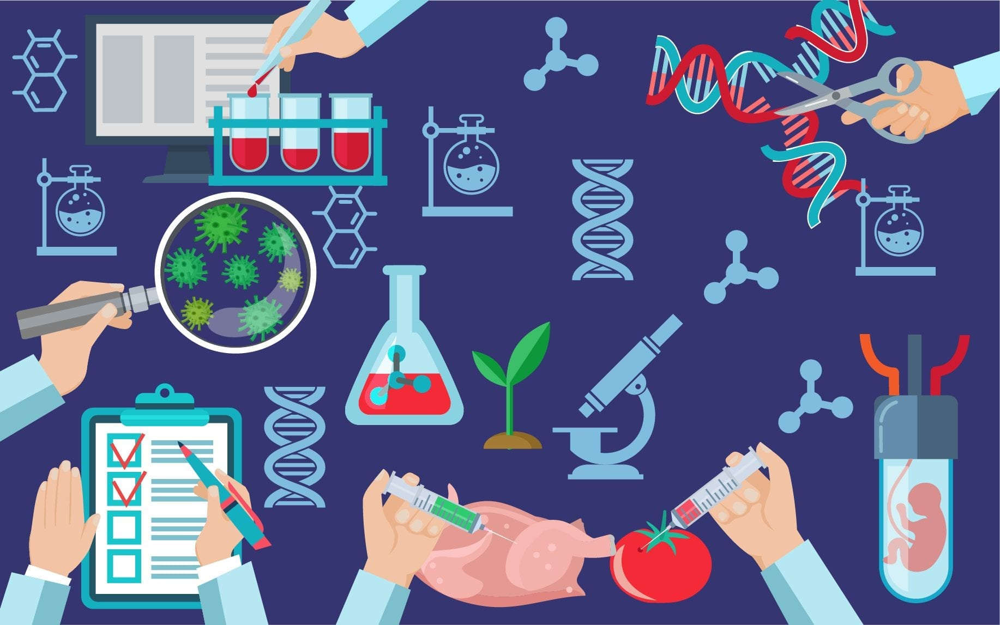
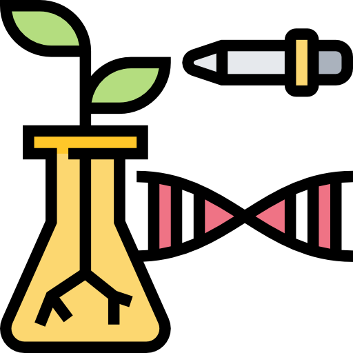

Hoy en día hacemos uso de nuestro telefono celular para todas las
cosas, desde checar nuestras redes sociales hasta ver videos a
través de internet, es un mundo infinito de posibilidades. El
futuro parece prometedor. Pero como reaccionarias si te digo que
ahora estan migrando esa tecnologias de un simple aparato
tecnologico a algo mas complejo, el cuerpo humano. Parece una
pelicula sobre algún tipo de apocalipsis no muy lejano, pero no,
esto es actual.
Representación de la Biotecnología.
Las 10 Empresas de Biotecnología más innovadoras
Ahora les dejaremos un ranking de las 10 empresas en biotecnología
más innovadoras
Grupo Salines
Probiomed
GreenCorp
Applied Biotec SAS de C.V.
Semillas Papalotlas S.A. de C.V.
Bokados (Nacional de Alimentos y Helados, S.A. de C.V.).
Avimex S.A. de C.V.
Biokrone, S.A. de C.V.
Tangible Nous, S.A. de C.V.
Grupo Viz (Sukarne) S.A. de C.V.
Ilustración representando a científico examinando una muestra en
un laboratorio.
La Biotecnología me gusta mas en el área de la medicina, en el
tema por ejemplo de los antibióticos, la forma en la que se tuvo
que descubrir algo que sería una innovación radical más adelante
cambiando el futuro de la medicina para siempre y salvando a
millones de personas.
El video define muy bien las definiciones de lo que es la
Biotecnología, que tipos hay, sus ventajas, desventajas y el
futuro de éstas.
Investigación
24/10/22
La Biotecnología
Se podría decir que son procesos en los cuales
hay implicación de seres vivos, esto viene de por
que molestarnos en crear un producto nosostros si otros seres
vivos como bacterias, microbios o plantas pueden hacer ese proceso
por nosostros. De allí viene la biotecnología.
Existen microorganismos para todo: los hay que son capaces de
vivir en agua hirviendo, y los que habitan hielo, pasando por
los que existen en el interior de la corteza terrestre. Son
capaces de comer petróleo, madera, plástico, e incluso rocas
sólidas.
33%
¿Cómo la encontramos en el día a día?
La biotecnología se puede encontrar en
mucha variedad de productos hoy en día, nombrando
a algunos está por ejemplo la conservación de alimentos con el uso
de bacterias que retrasan la descomposición de estos, como es el
caso de la leche, quesos, cerveza incluso el pan, hasta el mejor
descubrimiento del siglo XX, los antibióticos derivado
originalmente de la penicilina.
66%
¿Qué nos espera en el futuro?
En un futuro se espera lograr que a partir de microorganismos en
el sector de la medicina se puedan curar por ejemplo
enfermedades complejas tales como el cancer, en
los cuales se están ideando planes de acción en esa enfermedad,
mejorar la eficacia de los antibióticos, logrando así evitar
resistencias a antibióticos, entre muchas otras innovaciones que
se esperan que lleguen a futuro.
100%

Ilustración demostrando áreas de la biotecnología.

El futuro de la biotecnología en la medicina
17/01/23
En el futuro
La biotecnología sigue siendo un campo sorprendente hasta el día
de hoy, pero va avanzando más rápido de lo que uno cree, se pueden
ver esos esfuerzos en muchas áreas de trabajo, y en la que
hablaremos hoy es la medicina.
La medicina tiene gran avance utilizando precisamente la
biotecnología, un ejemplo muy conocido y concreto es el tema de
los medicamentos, estos han ido mejorando poco a poco con la
utilización de técnicas cómo lo es las computadoras capaces de
hacer complicados cálculos para llegar a un resultado sobre la
reacción del ser humano hacia un medicamento o sustancia,
descubriendo en el proceso muchas combinaciones de sustancias para
una medicina más efectiva contra una enfermedad o padecimiento.
Además, no sólo los medicamentos son beneficiados en esto, sino
también técnicas para el tratamiento de enfermedades usando
tecnologías, aparatos robóticos e inteligencias artificiales. Un
caso muy concreto sería el aparato robótico llamado Da Vinci, un
brazo controlado por el cirujano con la habilidad de realizar
cirugias de mínima invasión con precisión quirúrgica, realizando
cortes y cauterización de una forma muy exacta, además de ser un
brazo principal, se le pueden incorporar diversas herramientas e
instrumentos para cualquier tipo de cirugía, y esta siendo de
mínima invasión, se logra que el paciente pueda ser operado y
salga de posoperatorio rápidamente simple y sencillamente cómo sí
de una cirugía ambulatoria se tratase.
En un futuro se podrá seguir implementando más avances en el campo
anteriormente mencionado, todo lleva tiempo, pero no falta mucho
para que en un futuro cercano haya una tecnología única e
innovadora.
 Video Informativo
Video Informativo
 Investigación
Investigación